Complementarity systems
Linear complementarity system (LCS)
Having introduced the complementarity constraints and optimization problems with these constraints, we can now show how these constraints can be used to model a certain class of dynamical systems – complementarity dynamical systems. We start with linear ones, namely, linear complementarity systems (LCS). These are also called in the literature as Linear dynamical complementarity problems (LDCP).
Linear complementarity system is modelled by \boxed{ \begin{aligned} \dot x(t) &= A x(t) + Bu(t)\\ y(t) &= C x(t) + Du(t)\\ 0&\leq u(t) \perp y(t) \geq 0. \end{aligned}} \tag{1}
Example 1 (Electrical circuit with a diode as an LCS)
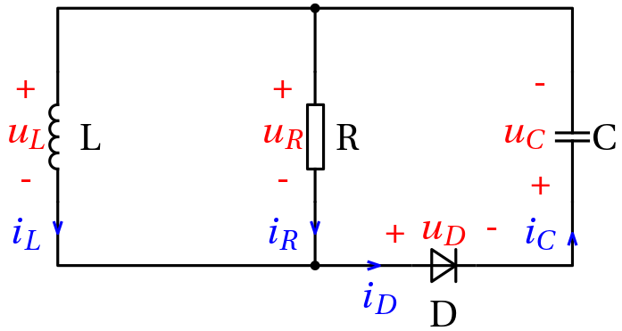
Note the upside-down orientation of the voltage and the current for the capacitor – we wanted the diode current identical to the capacitor current.
Following the charge formalism within Lagrangian modelling, we can choose the generalized coordinates as q = \begin{bmatrix} q_L \\ q_C \end{bmatrix}.
That this is indeed a sufficient number is obvious, but we can also check the classical formula B-N+1 = 4-3+1 = 2. But we can also choose the state variables as x = \begin{bmatrix} i_L\\ q_c \end{bmatrix}.
The resulting state equations are \begin{aligned} i_L' &= -\frac{1}{LC}q_C - \frac{1}{L}u_D\\ q_C' &= i_L - \frac{1}{RC} q_C - \frac{1}{R} u_D. \end{aligned}
The idealized volt-ampere characteristics of the diode is
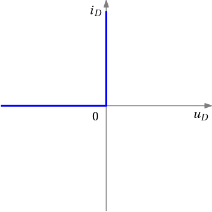
Flipping the axes to get the current as the horizontal axis, we get
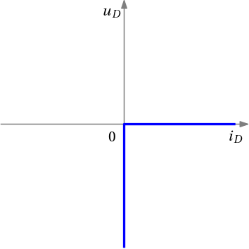
Finally, after introducing an auxiliary variable (the reverse voltage of the diode) \bar u_D = -u_D , we get the desired dependence
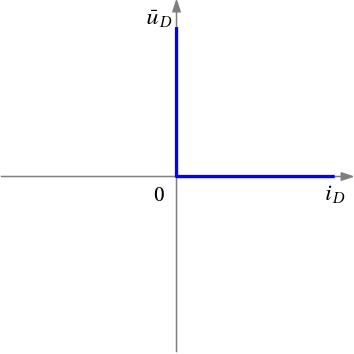
which can be modelled as a complementarity constraint
0\leq i_D \perp \bar u_D \geq 0.
Now, upon replacing the diode voltage with its reverse \bar u_D while using i_D=i_C, we get \begin{aligned} i_L' &= -\frac{1}{LC}q_C + \frac{1}{L} \bar u_D\\ q_C' &= i_L - \frac{1}{RC} q_C + \frac{1}{R} \bar u_D\\ 0&\leq q_C' \perp \bar u_D \geq 0. \end{aligned}
We are not there yet – there is a derivative in the complementarity constraint. But just substitute for it:
\begin{aligned}
i_L' &= -\frac{1}{LC}q_C + \frac{1}{L} \bar u_D\\
q_C' &= i_L - \frac{1}{RC} q_C + \frac{1}{R} \bar u_D\\
0&\leq i_L - \frac{1}{RC} q_C + \frac{1}{R} \bar u_D \perp \bar u_D \geq 0,
\end{aligned}
and voila, we finally got the LCS description. We can also reformat it into the vector format
\begin{aligned}
\begin{bmatrix}
i_L' \\ q_C'
\end{bmatrix} &=
\begin{bmatrix}
0 &-\frac{1}{LC}\\
1 & - \frac{1}{RC}
\end{bmatrix}
\begin{bmatrix}
i_L \\ q_C
\end{bmatrix} +
\begin{bmatrix}
\frac{1}{L}\\
\frac{1}{R}
\end{bmatrix}
\bar u_D\\
0 &\leq \left(\begin{bmatrix}
1 & - \frac{1}{RC}
\end{bmatrix}
\begin{bmatrix}
i_L \\ q_C
\end{bmatrix} +
\begin{bmatrix}
\frac{1}{L}\\
\frac{1}{R}
\end{bmatrix}
\bar u_D\right ) \bot \bar u_D \geq 0.
\end{aligned}
Example 2 (Mass-spring system with a hard stop as a linear complementarity system) Two carts moving horitontally (left or right) are interconnected through a spring. The left cart is also interconnected with the wall through a another spring. Furthemore, the motion of the left cart is constrained in that there is a hard stop that prevents the cart from moving further to the left. The setup is shown in Fig. 1.
The variables x_1 and x_2 give deviations of the two carts from their equilibrium positions.
The hard stop is located at the equilibrium position of the left cart.
Besides the two positions, their derivatives are also introduced as state vectors. The input u corresponds to the reaction force of the hard stop.
As the output, only the position of the left cart is (arbitrarily) chosen.
The state equations and the output equation are \begin{aligned} \dot x_1(t) &= x_3\\ \dot x_2(t) &= x_4\\ \dot x_3(t) &= -\frac{k_1+k_2}{m_1}x_1(t) + \frac{k_2}{m_1}x_2(t) + \frac{1}{m_1}u(t)\\ \dot x_4(t) &= \frac{k_2}{m_2}x_1(t) - \frac{k_2}{m_2} x_2(t)\\ y(t) &= x_1(t). \end{aligned}
The presence of the hard stop can be modelled as an inequality constraint on the state (or the output in this case) x_1(t) = y(t) \geq 0.
Strictly speaking, similar constraint should also be imposed on the right cart. That one can not overcome the hard stop either. Furthermore, the left cart would stand in the way too. But we ignore it here for the sake of simplicity of our explanation.
The reaction force u can only be nonnegative u(t) \geq 0.
Furthermore, the reaction force is acting if and only if the left cart hits the hard stop, that is,
y(t) u(t) = 0.
All the above three constraints can be written compactly as a complementarity constraing 0\leq y(t) \perp u(t) \geq 0.
Complementarity system as a feedback interconnection
A complementarity system Eq. 1 can be seen as a feedback interconnection of a linear system and a complementarity constraint.
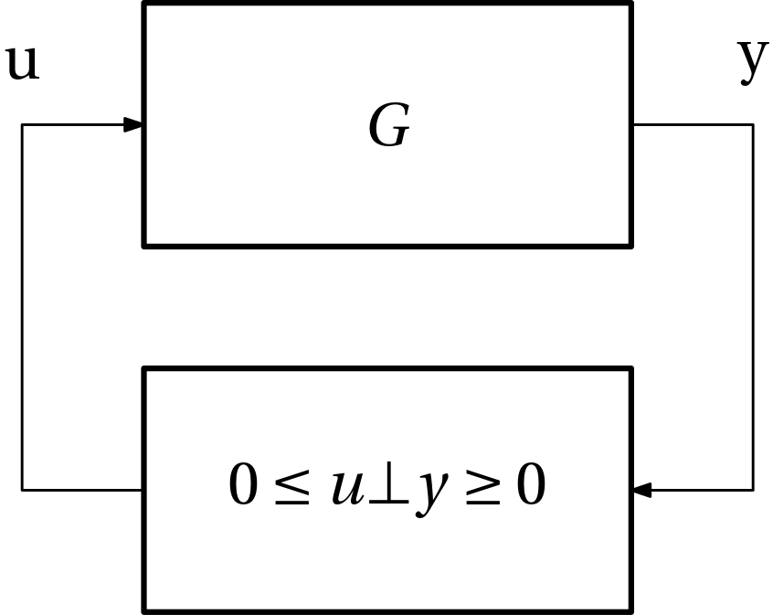
Complementarity systems vs PWA and max-plus linear systems
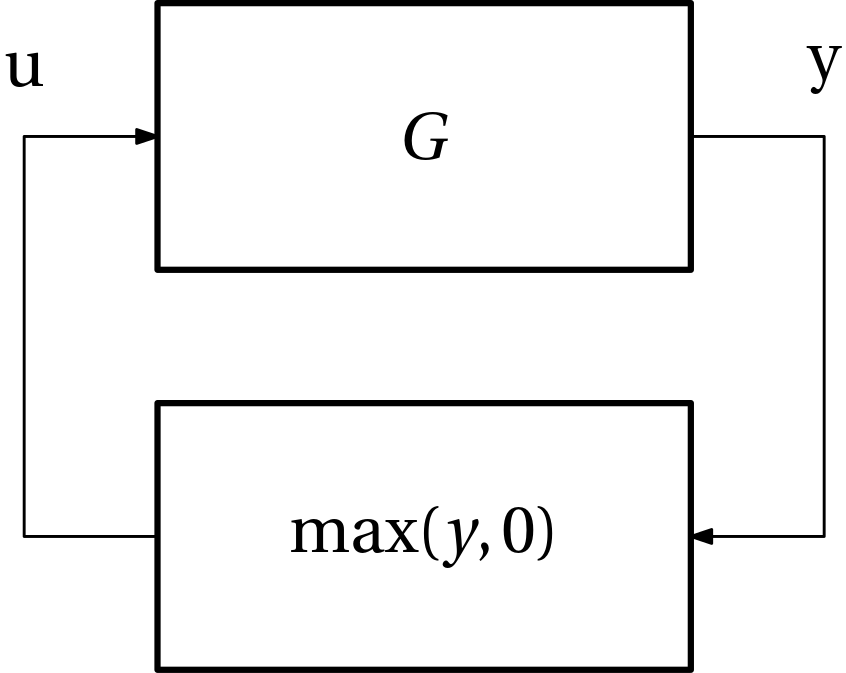
y = y^+ - y^-,\quad 0 \leq y^+ \bot y^- \geq 0.
\max(y,0) = \max(y^+ - y^-, 0) = y^+.
Set y^+ = u
then y = u - y^- \qquad y^- = u - y
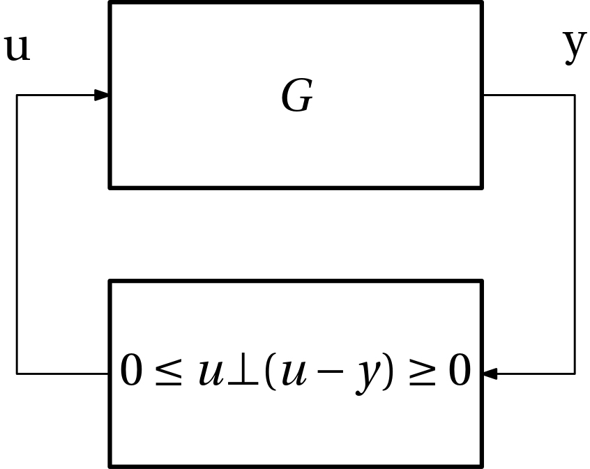
More complicated PWA functions in feedback
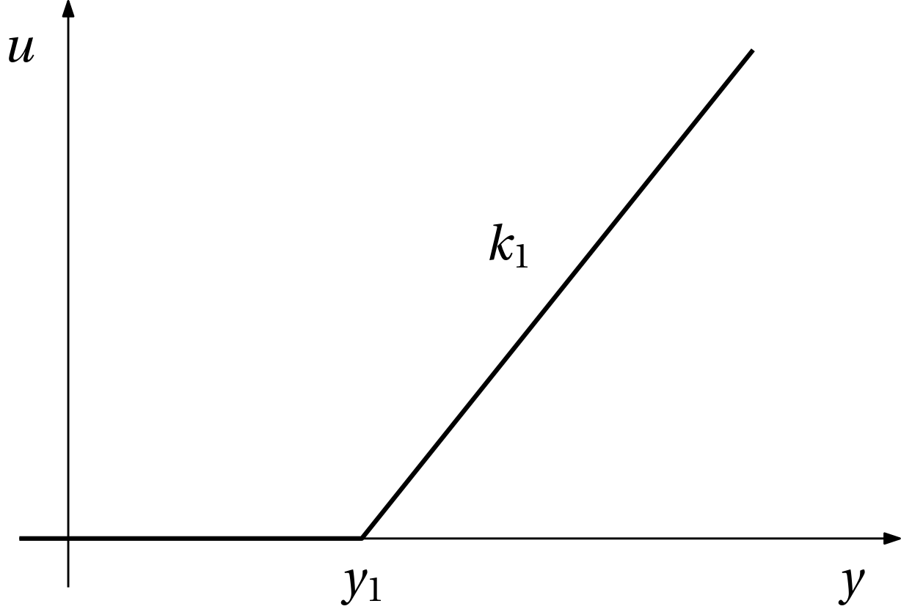
. . .
u(y) = k_1 \max(y-y_1,0) = \max(k_1(y-y_1),0)
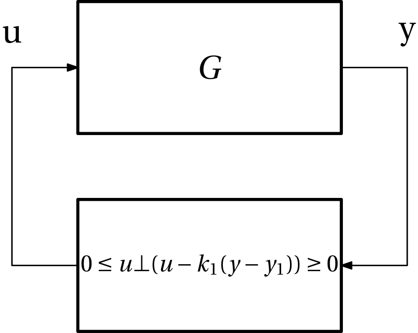
Some more segments
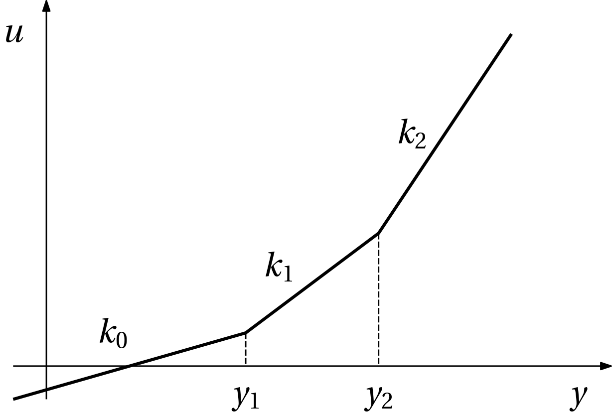
\begin{aligned} u(y) &= k_0 y + u_0 + (k_1-k_0) \max(y-y_1,0) \\ &\qquad + (k_2-k_1) \max(y-y_2,0)\\ &= k_0 y + u_0 + \underbrace{\max((k_1-k_0)(y-y_1),0)}_{u_1}\\ &\qquad + \underbrace{\max((k_2-k_1)(y-y_2),0)}_{u_2} \end{aligned}
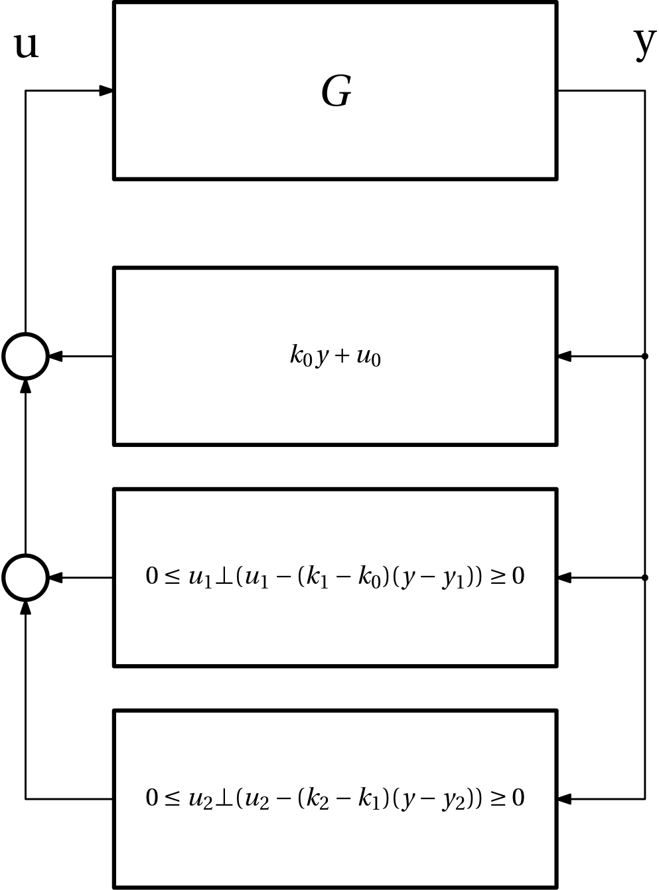